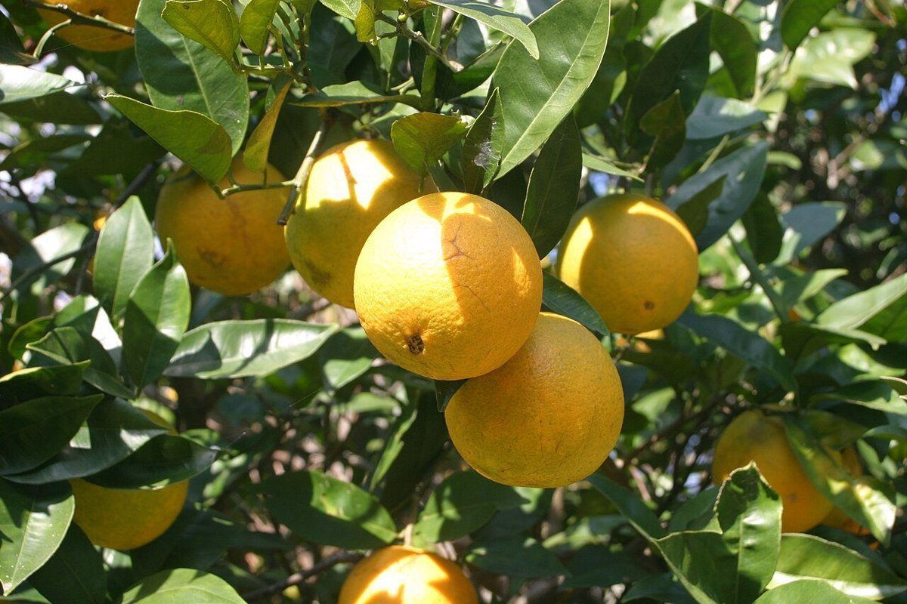
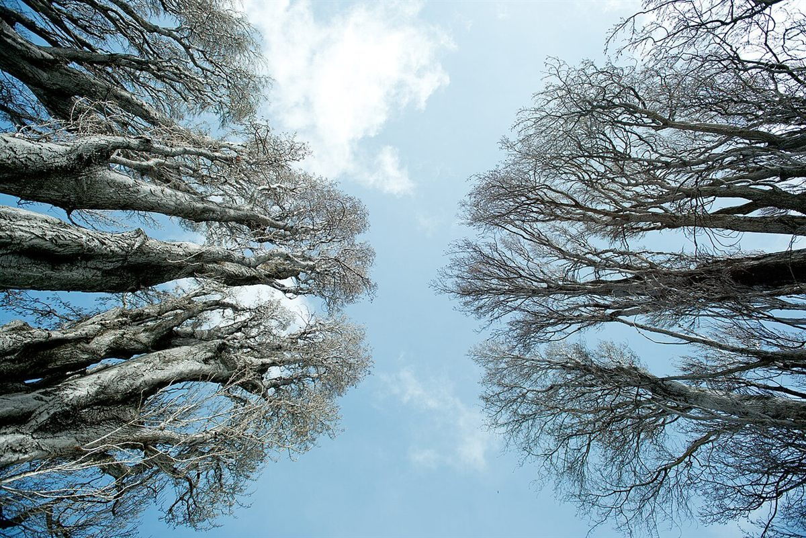

smile笑顔
笑顔を連想して選んだ、コーヒーの泡が笑って見える一枚。

カフェ / 沖縄県島尻郡久米島町
沖縄県島尻郡久米島町にあるカフェ「smile aid trunk」のご案内ページです。営業時間やメニューなど詳しいことは準備中。まずはInstagramをのぞいてみてください。

制作側の連想
屋号の由来は分かりません。制作側は「smile(笑顔)」「aid(手助け・応急の助け)」「trunk(大きな収納箱、木の幹)」という三つの単語から、救急箱のような収納トランクを思い浮かべ、このページを「引き出し番号つきの収納箱」の作りにしました。お店の理念・由来とは無関係の、制作側の連想です。
三つの引き出し(イメージ)
写真は久米島町の風景やお店のものではありません。単語から連想して選んだ、国外・撮影地不明のフリー素材です。
笑顔を連想して選んだ、コーヒーの泡が笑って見える一枚。
ひと息つける手助けを連想して、ガラス瓶と琥珀色のお茶を。

木の幹を連想して、朝霧に浮かぶ木々を。

収納リスト
ここに入っているのは所在地とInstagramだけ。ほかは空の仕切りです。
| 所在地 | 〒901-3108 沖縄県島尻郡久米島町比嘉99-11 |
|---|---|
| 電話 | なし |
| 営業時間 | 準備中 |
| 定休日 | 準備中 |
| ご予約 | 準備中 |
| 駐車場 | 準備中 |
| SNS | Instagram @smileaidtrunk |


